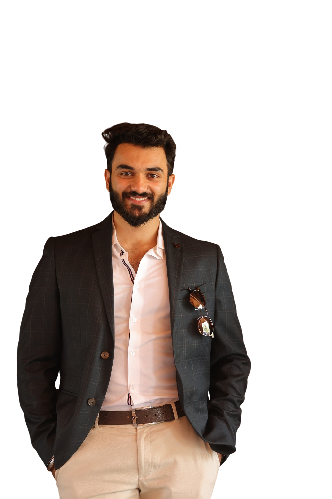

Welcome to my website! I'm a software engineer who dabbles in data, cloud, and AI; I have a passion for all things technology and system design. In addition to my professional work, I am also interested in history, space, and paleoanthropology.

projects where the interesting part is under the hood, like an old hot rod
technologies i've spent way too many hours googling
shiny digital badges that say that i'm officially house trained
the paper trail of how i got here